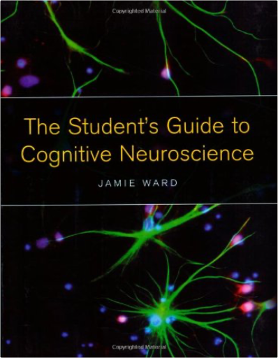
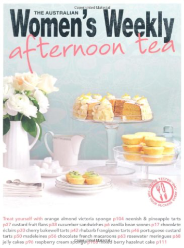
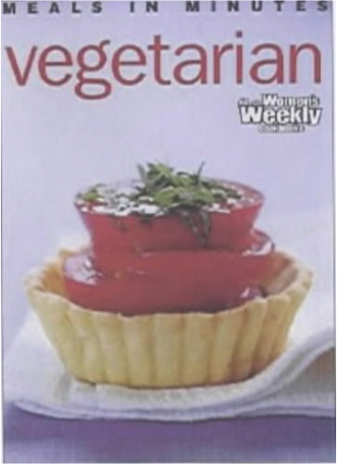
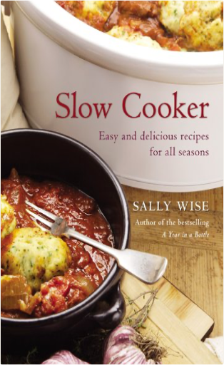

This is the definitive illustrated edition of the international bestseller with gorgeous new photography of the celebrated netsuke collection, and sumptuous full-colour images hand-picked by Edmund de Waal from his family archive 264 Japanese wood and ivory carvings, none of them bigger than a matchbox: Edmund de Waal was entranced when he first encountered the collection in his great-uncle Iggie's Tokyo apartment. When he later inherited the 'netsuke', they unlocked a story far larger and more dramatic than he could ever have imagined. From a burgeoning empire in Odessa to fin de siecle Paris, from occupied Vienna to post-war Tokyo, Edmund de Waal traces the netsuke's journey through generations of his remarkable family against the backdrop of a tumultuous century.  The Student's Guide to Cognitive NeuroscienceJamie Ward Reflecting recent changes in the way cognition and the brain are studied, this book provides a comprehensive and student-friendly guide to cognitive neuroscience. Following an introduction to neural structure and function, all the key methods and procedures of cognitive neuroscience are explained, with a view to helping students understand how they can be used to shed light on the neural basis of cognition.  Afternoon TeaAustralian Women's Weekly Following the best-sellers in this series, Cupcakes & Fairycakes and Easy Cupcakes by Colour, comes the prettiest little book ever. Afternoon tea is the ultimate in femininity - containing all the delights of the tea table. Finger sandwiches, scones, pastries, little cakes, big cakes, biscuits and slices are all here as well as information on how to make a proper pot of tea and how to set the tea table. This is every girl's dream book!  VegetarianAustralian Women's Weekly You can never have too many recipes for quick and healthy mid-week meals. This collection of recipes offers healthy vegetarian meals that are quick to put on the table when there are only 30 minutes to spare before the family dies of hunger. Each recipe includes a photograph, simple instructions, and has been triple-tested by The Australian Women's Weekly Test Kitchen to ensure success. |  The extraordinary story of a boy called Wart — ignored by everyone except his tutor, Merlin — who goes on to become King Arthur.  Slow Cooker: Easy and Delicious Recipes for All SeasonsSally Wise Sally Wise owns two crock pots and three slow cookers. At this very moment there is probably a pot of something delicious on her kitchen bench, slowly cooking itself to perfection — to say that she is passionate about this style of cooking would be an understatement. In SLOW COOKER, the bestselling author of A YEAR IN A BOTTLE shares her favourite slow cooker recipes. Drawn from a collection created over thirty years of preparing tasty, economical and nutritious meals for her family, they include soups, mains — beef, lamb, chicken, pork and vegetables — and delectable desserts. Sally believes that a slow cooker should be among the kitchen tools of every budget-conscious or busy person. These mouthwatering and easy-to-follow recipes will make slow cooking a cinch, all year round.  Zesty yet simple raspberry jam on steaming fresh scones from the oven; tasty pickles, relishes and chutneys to complement roasts; and plump, tasty pickled onions and sumptuous fruit cheeses for the cheese platter ... just a small taste of what readers will find in Sally Wise's wonderful preserving cookbook. Containing a lifetime of passion and preserving wisdom, A YEAR IN A BOTTLE is an inspiring and practical collection of more than 100 recipes and hints for making your own glorious jams, jellies, marmalades, drinks, pastes, fruit cheeses, chutneys, relishes and pickles. Includes easy and simple recipes, technical advice and helpful hints from selecting ingredient to safety tips to ensure success. This updated edition of Richard’s most impressiveand sought-afterhardcover photographic book showcases the beauty and drama of the vast Western Australian landscape.  The Nile, stretching for a distance of 4,163 miles, is the longest river in the world. The ancient Greeks were obsessed by the provenance of so much water, feeding a river that flowed out of the desert. Aeschylus, in 500 BC, talked of Egypt being nurtured by the snows. For centuries, the only sporadic reports from the heart of equatorial Africa came from Arab seafarers, land travellers and slavers. In the mid-1850s in Britain, the great thirst for adventure and discovery, combined with the challenge posed by the ancient riddle of the secret sources of the Nile and acted like a magnet on men such as Sir Richard Burton, Captain Hanning Speke, Samuel Baker, Dr David Livingstone and Henry Morton Stanley. This gripping account, illustrated with many prize-winning photographs, traces the tribulations and achievements of the men who walked in the footsteps of Herodotus and carried away the prize: the discovery of the sources of the Nile. |

Doddridge Library
Collection Total:
417 Items
417 Items
Last Updated:
Apr 21, 2020
Apr 21, 2020


 Made with Delicious Library
Made with Delicious Library